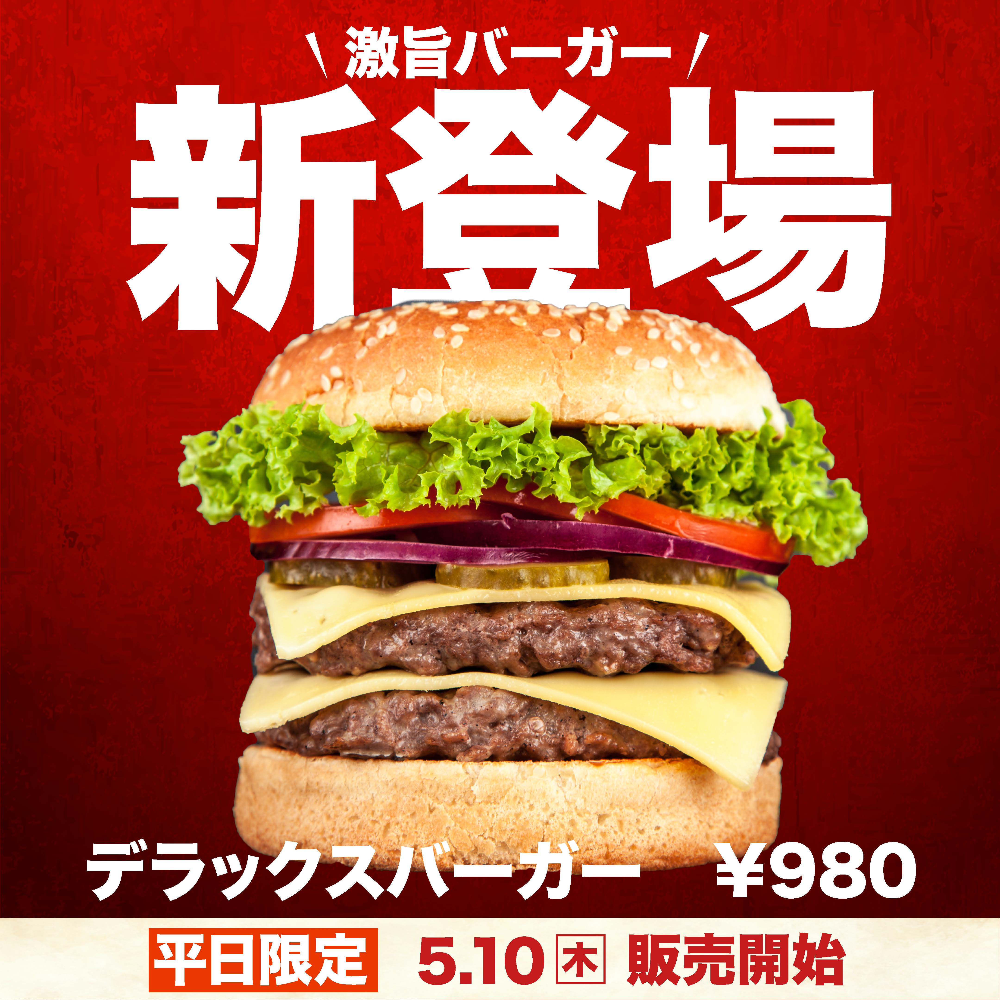
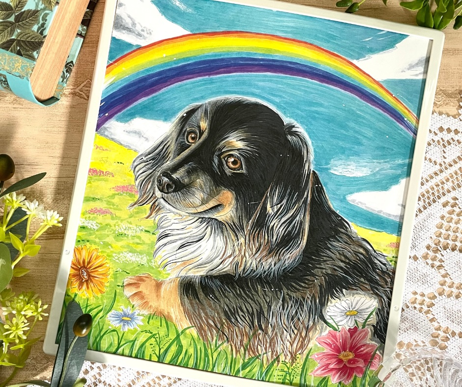
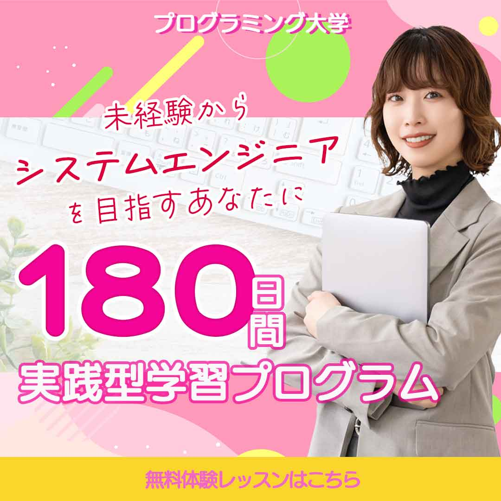
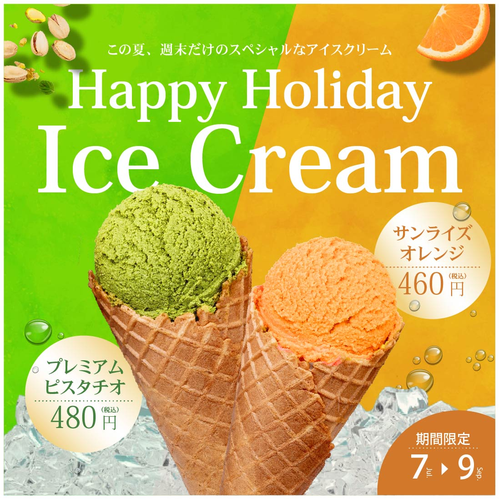
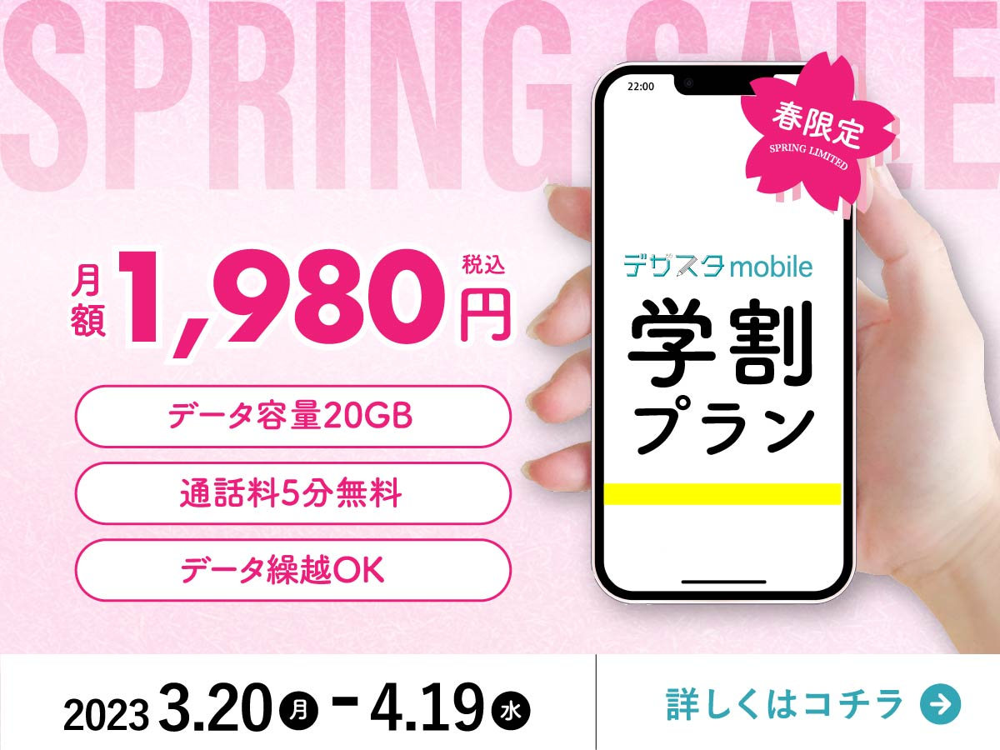
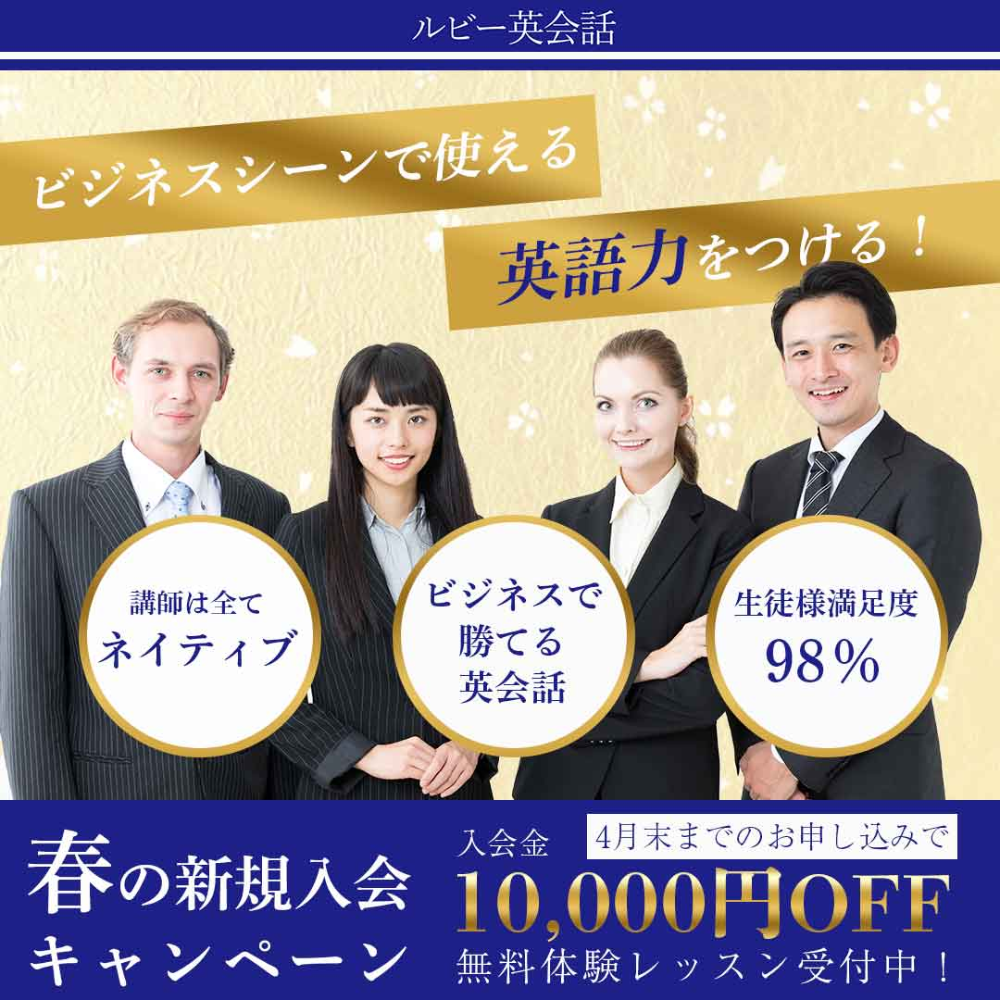

Works












About

塩原 亜季子
岩手県在住
似顔絵を手渡したときに見せてくれた笑顔が忘れられず、“人を笑顔にするデザイン”を目指すようになりました。
一人旅が好きな行動力お化け。しかし40を過ぎてからおうち時間の良さに気付く。（億劫になっている可能性大。）
エヴァンゲリオンの呪縛から解放されないアラフォー。
経歴
2005年 代々木アニメーション学院 卒業
2021年 にがおえがお 開業